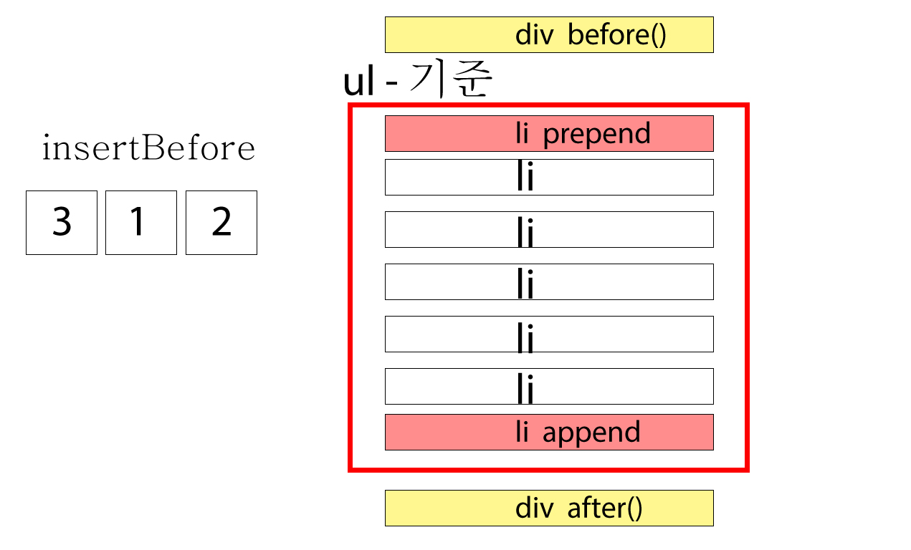

객체 편집 메소드는 html문서안에서 사용자가 선택한 요소의 앞쪽이나 뒤쪽에 내용을 추가하거나 복제, 삭제하는 메소드.
문단요소입니다.
내용추가 메소드는 이메일추가, 쇼핑몰 콘텐츠 '더보기', 모달창, 갤러리 작품 더보기, 공지사항 더보기, FAQ더보기 등 내용을 추가하고자 할 때 응용할 수 있다.
insertAfter(), insertBefore()를 사용하면 A라는 요소의 앞쪽에 B라는 요소를 배치할 수 있고, B라는 요소의 뒤쪽에 A요소를 배치할 수도 있다. after(), before()메소드와 기능은 같지만 사용법이 다르다.
예)
$('A').after('B'); - A요소의 바깥쪽으로 뒤에 B내용을 추가한다.
$('B').insertAfter('A'); - A요소의 바깥쪽으로 뒤에 B내용을 추가한다.
사용자가 선택한 요소를 찾아서 내용만 지우거나, 요소자체를 삭제하기